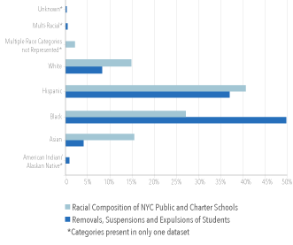
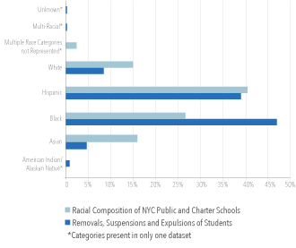
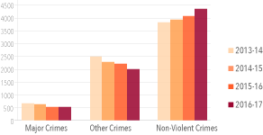
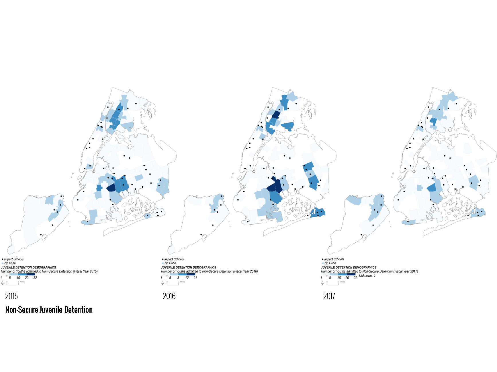
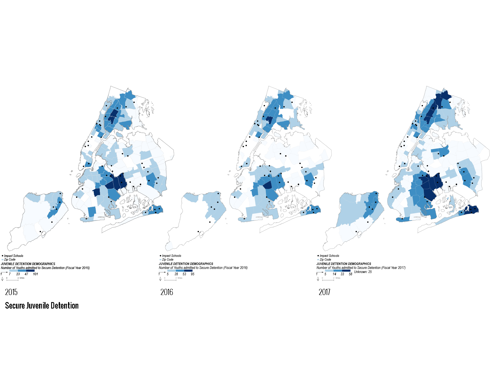

Introduction
1. Long history of police officers in schools from late 90s, now DeBlasio stopped that. Why were they introduced in the first place and why did the Mayor cancel them?
2. School safety agents in public & charter schools - Who are they and what are their powers?
3. Security in private schools.
Vestibulum ante
1
School Safety Agent in a New York City public school.
4. Other policing mechanisms: metal detectors in schools. Why were they put there and how are they being used today? for example in schools with both elementary and middle/high schools, elementary school students bypass the metal detectors
Metal Detectors in Schools.
Section One - School Safety
5. Are these metal detectors particularly useful in detecting crime? 88% were non-scanning and 12% was scanning in the 4th quarter of 2017 - what of 2016 etc
2
3

NYPD arrests of students from incidents involving scanning from the metal detector in 2016 and 2017.
6. Are the students being punished proportional to the racial distribution in schools?
3
Black kids get punished the most followed by Hispanic kids. But black kids get punished at a higher rate than it should be given the number of black students there are 
2015-2016 Racial breakdown of NYC schools vs who is being suspended/expelled.

2016-2017 Racial breakdown of NYC schools vs who is being suspended/expelled.
7. NYPD & arresting students
a. Restraints v Age
b. Restraints v Race
c. Intervention Type (arrest, summons, etc) v Race
3

Percentage of each strata in every neighborhood in Medellín.
8. NYPD continued ...
a. Off or on site
b. Charge
c. Type of Force, and force vs no force?
d. School Safety Agent/Police?
3
This is a caption for your embedded item
ok.Section Two - School & Juvenile Crime
Crime in NYC schools over time and what school crimes people are being reported?
Crime in NYC public schools from 2013 - 2017.
Types and rate of school crimes.
Where are the people in NYC’s juvenile system from (zip code) and who are they?
What are people being arrested for?

Zip codes of juveniles in Non-secure detention.

Zip codes of juveniles in secure detention.
Detention Rates of different races of juveniles in secure detention.
Detention Rates of different races of juveniles in secure detention.
Please note: footnotes not visible on mobile.
Return to Student Projects